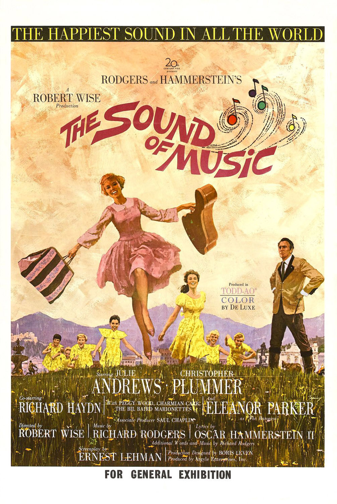

Stuart Nixon
Full-stack web developer with Le Wagon
'Multipotentialite'. Background in media production and marketing, with experience in graphic design and film/video. I’m also a linguistics enthusiast. Coming from the country of eleven official languages, South Africa, and having spent the last five years based in South Korea as a language teacher and learner, I am invested in language and education. I wanted to upskill and take on new challenges in another country, so here I am in China with Le Wagon! My greatest interest at the moment is at the intersection of language/education and technology. I believe in the power of both languages and tech to bridge divides. That’s where coding comes in. Plus I see having coding skills and digital proficiency as an investment in the future. After Le Wagon, I aim to continue to sharpen my skills and use them to find new career opportunities.
An Eclectic Trio of Movies I ❤️
 |
Get Out (2017)A young African-American visits his white girlfriend's parents for the weekend, where his simmering uneasiness about their reception of him eventually reaches a boiling point. |
The Grand Budapest Hotel (2014)The adventures of Gustave H, a legendary concierge at a famous hotel from the fictional Republic of Zubrowka between the first and second World Wars, and Zero Moustafa, the lobby boy who becomes his most trusted friend. |
|
|  |
The Sound of Music (1965)A woman leaves an Austrian convent to become a governess to the children of a Naval officer widower. |